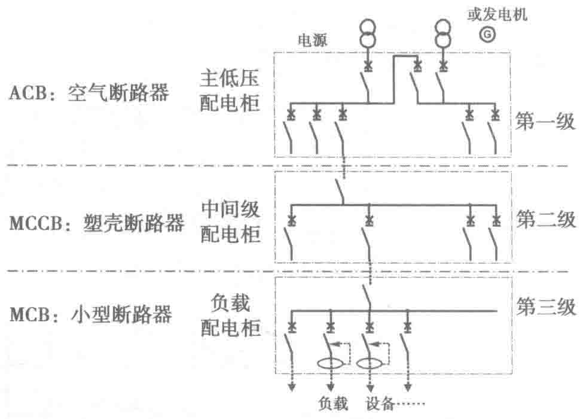

的设备，对于相同容量的数据中心，两个系统的设备容量比是3∶2，所以“△2N”系统对大容量数据中心供电方案更具有灵活性。
“2N”和“△2N”系统共同点：对于双输入电源负载，两条供电线路是冗余的；对于设备，UPS输入输出配电柜、UPS系统、列头柜等配电设备都是对应冗余的；ATS为两条线路共用设备，依靠机械转换，具有非常好的隔离功能。
2.3.3 断路器的选择
1. 断路器分类
低压断路器是一种不仅可以接通和分断正常负荷电流和过负荷电流，还可以接通和分断短路电流的开关电器。
按结构形式，断路器可分为以下几种：
- ACB：空气断路器，具有大电流、高分断能力，动态稳定性、热稳定性强，具有电网监控功能，通常用于主低压配电柜的主进断路器。
- MCCB：塑壳断路器，具有中等电流和高分断能力，动态稳定性、热稳定性强，动作快速灵活，具有多种操作形式，可上下扳断、左右旋转或电动机驱动，具有电网监控功能，通常用于主低压配电柜的分路断路器或中间级的主输入断路器。
- MCB：小型断路器，用于小电流分断保护，各项性能适当，自复位，有接地保护、漏电保护、过电压/欠电压保护、电流驱动等辅助功能，便于组合，更换快捷。通常用于终端配电线路。

2. 断路器设计
（1）断路器基础知识
1）脱扣器
脱扣器与断路器是机械上的相连，是用以释放保持机构并使断路器自动断开的装置。